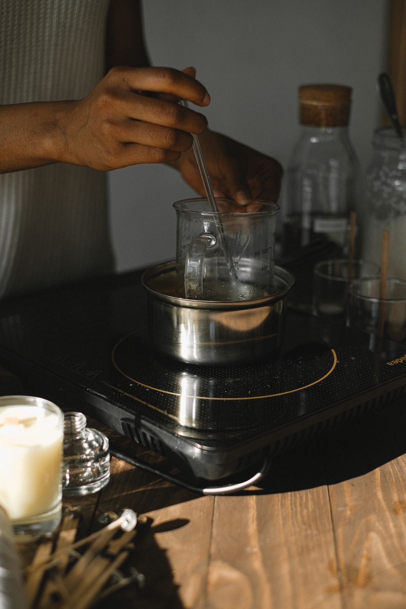

412
sets poured since 2021
About the maker

My grandmother kept her kinara on the sideboard twelve months a year, candles and all, because she said a thing you only bring out for a week gets treated like a costume. I grew up watching the black candle come down shorter every January. In 2019, the year she turned eighty, I poured her a set myself — badly. The reds leaned, the black one tunnelled by night three, and she lit it anyway, every night, and told me to learn the trade properly.
So I did. Two winters of test burns on a bench in her garage: wick sizes, pour temperatures, cure times, written down in a school notebook that became the first ledger. The studio followed in 2021, two streets over. The notebook is still how every set is recorded — buyer, batch, pour date, the night the set is due to be finished. This website is that book, opened up.
Here is the thing five Kwanzaas at the bench have taught me, and I will argue it with any candle maker in Georgia: a candle you light once a year has to work the first time. There is no second burn to get it right. The week is the test, and the test is public — the whole family is sitting right there. That is why the cure is fourteen days and never thirteen, why one candle from every batch burns on my bench before the batch is sold, and why the planner on the home page will talk you out of a small candle when your evenings run long.
412
sets poured since 2021
2,884
candles wicked by hand
14 days
cure on every set, never less
0
sets sent out late for Kwanzaa week, in five years
Five entries, in the order the work happens. Nothing on this list is decoration — each step is there because a set failed without it, once, in the test winters.
Soy pillar wax, weighed to the gram and melted to 185°F. The dye goes in the pot in a fixed order — black first, then red, then green — so a stray fleck from an earlier batch can never cross into the wrong colour.
Cotton wicks centred by hand, one mould at a time. The pour happens at 150°F in two passes: the first fills, the second tops up the well that forms as the wax cools, which is what keeps the tops level and the first burn clean.
Soy wax hardens and settles as it rests; a set burned too young tunnels and smokes. A set poured on 1 December is ready on the 15th. This is the whole reason the book closes on 10 December.
One candle from every batch burns four hours on the bench before the batch is entered as ready. Pool width, flame height, any soot — written against the batch number. A batch that fails is re-poured, and the book says that too.
Wicks trimmed to a quarter inch, the printed ledger card folded in, and the set entered under the buyer’s name with its pour date — so next year, when the stubs come back, the book already knows whose they are.
The first burn sets the candle’s memory. Let the melt pool reach the edge before you blow it out — about an hour for every inch across, so three hours for these pillars. A candle blown out early will tunnel down the same narrow well all week.
Trim the wick to a quarter inch before every lighting. A long wick smokes and leans the flame; a trimmed one stands straight. Trim when the wax is cool, and keep the trimmings out of the pool.
Mind the black candle. It burns all seven nights while its neighbours rest between theirs. If your evenings run long — and Karamu night runs long for everybody — size up a height and let the planner on the home page show you the hours.
And the plain rule: a flame is never left alone in a room, never near the curtains, and never where a sleeve or a programme can reach across it. Seven candles by night seven is a lot of fire to love. Love it attended.